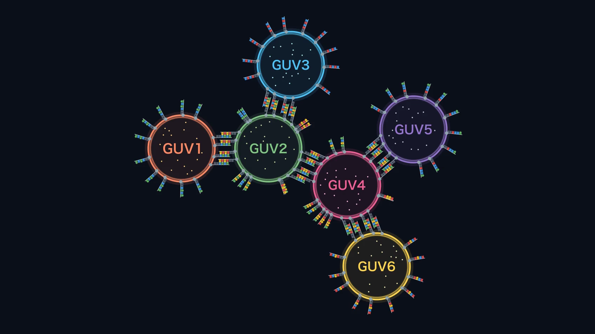

Future

Extension to Branched Networks
In this project, we proposed a network that connects three GUVs in a line: GUV1–GUV2–GUV3. As a next step, we plan to extend this linear network to a branched network.

For example, we consider connecting a fourth GUV (GUV4) to the middle GUV2, in addition to GUV1 and GUV3. GUV2 then becomes a branch point with three connections: GUV1–GUV2, GUV2–GUV3 and GUV2–GUV4. Because each connection in ALiGN is designed independently with its own DNA sequence, we expect that adding a new pair of sequences will add a new branch without disturbing the existing connections.
A material released from one GUV passes through the branch point and reaches two GUVs in different directions. In this way, contents can be moved in various directions, just as cells send signals to many partners.
All the pores between connected GUVs are open, so a material released from one GUV spreads in every direction. Pores whose opening or assembly is controlled by light have been reported. Wang et al. attached photoswitches to α-hemolysin, the pore protein that we also use, and switched the pores ON and OFF repeatedly with light of two wavelengths [1]. Mutter et al. attached photoswitches to the pore-forming toxin FraC and controlled with light whether it forms pores in membranes [2]. If pores of this kind were placed in a branched network, we could open only the pores on the branch that we illuminate, so that a material is expected to move toward a chosen GUV instead of spreading to all of them. In the study of Wang et al., the pores were characterized by measuring ionic current through membranes [1], and whether they work between connected GUVs remains to be examined.
References for the Future
[1] Wang, X., Kerckhoffs, A., Riexinger, J., Cornall, M., Langton, M. J., Bayley, H. & Qing, Y. ON–OFF nanopores for optical control of transmembrane ionic communication. Nat. Nanotechnol. 20, 432–440 (2025). https://doi.org/10.1038/s41565-024-01823-x ↩ Back to the text
[2] Mutter, N. L., Volarić, J., Szymanski, W., Feringa, B. L. & Maglia, G. Reversible photocontrolled nanopore assembly. J. Am. Chem. Soc. 141, 14356–14363 (2019). https://doi.org/10.1021/jacs.9b06998 ↩ Back to the text